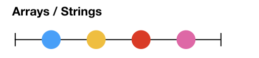
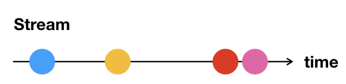
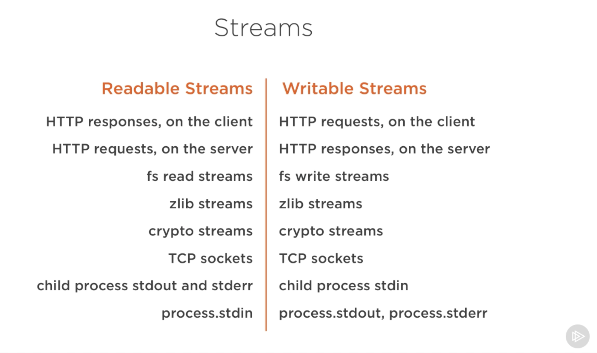

Web sockets
By Nabil Naffar & Danny Vernovsky & Almog LaktiviIn This Module
What is web socket?
socket.io
Streams
http

What is web socket?

⚡ Web sockets power ⚡
socket.io
- 🎉 JS library
- 🍻 Bi-directional real-time communication between client and server
- ⚡ Uses Web-sockets
- 🐌 Fallback to HTTP-polling
Initiating socket.io
Client
<script src="/socket.io/socket.io.js"></script>
Server
import * as socket from 'socket.io';
import { Server } from 'http';
import * as express from 'express';
const app = express();
const http = new Server(app);
const io = socket(http);
Using socket.io
It's all about events!!!
io.on('connection', function (socket) {
socket.emit('news', { hello: 'world' });
socket.on('my other event', function (data) {
console.log(data);
});
socket.broadcast.emit({message: 'send to all except me'});
});

Streams
What are Streams?
- Collections of data
- Just as Arrays or Strings 
- Data might not be available all at once 
Stream types in Node.js
The pipe method
readableSrc
.pipe(transformStream1)
.pipe(transformStream2)
.pipe(finalWritableDest)

|
|